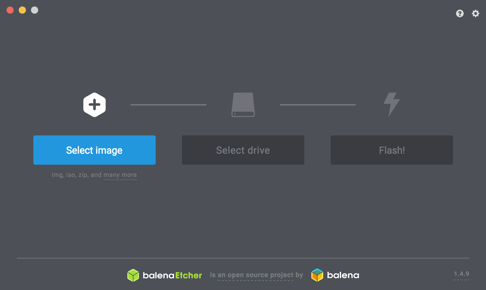

RaspPi3用のイメージ作成
本イメージ
Google Colaboraotoryと連携するために、DonkeyCar 2.5.8, TernsorFlow 1.12.0をインストールしたRaspberryPi用イメージになります。
インストールVersion 一覧
1 2 3 4 5 6 7 8 9 10 11 12 13 14 15 16 17 18 19 20 21 22 23 24 25 26 27 28 29 30 31 32 33 34 35 36 37 38 39 40 41 42 43 44 45 46 47 48 49 50 51 52 53 54 55 56 57 58 59 60 61 62 63 64 65 66 67 68 69 70 71 | Package Version ------------------- ---------- absl-py 0.2.2 Adafruit-GPIO 1.0.3 Adafruit-PCA9685 1.0.1 Adafruit-PureIO 0.2.3 astor 0.6.2 beautifulsoup4 4.5.3 bleach 1.5.0 certifi 2018.11.29 chardet 3.0.4 Click 7.0 cryptography 1.7.1 decorator 4.3.2 distlib 0.2.4 dnspython 1.16.0 docopt 0.6.2 donkeycar 2.5.8 eventlet 0.24.1 Flask 1.0.2 gast 0.2.0 greenlet 0.4.15 grpcio 1.12.1 h5py 2.7.0 html5lib 0.9999999 idna 2.8 imageio 2.5.0 imageio-ffmpeg 0.2.0 itsdangerous 1.1.0 Jinja2 2.10 Keras-Applications 1.0.7 Keras-Preprocessing 1.0.9 keyring 10.1 keyrings.alt 1.3 lxml 3.7.1 Markdown 2.6.11 MarkupSafe 1.1.1 monotonic 1.5 moviepy 1.0.0 numpy 1.14.4 pandas 0.23.0 picamera 1.13 Pillow 5.4.1 pip 10.0.1 pkg-resources 0.0.0 proglog 0.1.9 protobuf 3.6.1 pyasn1 0.1.9 pycrypto 2.6.1 pygobject 3.22.0 python-apt 1.1.0b5 python-dateutil 2.7.3 python-engineio 3.4.3 python-socketio 3.1.2 pytz 2018.4 pyxdg 0.25 requests 2.21.0 SecretStorage 2.3.1 setuptools 39.2.0 six 1.10.0 spidev 3.4 tensorboard 1.12.2 tensorflow 1.12.0 termcolor 1.1.0 tornado 4.5.3 tqdm 4.31.1 urllib3 1.24.1 virtualenv 15.1.0 webencodings 0.5 Werkzeug 0.14.1 wheel 0.31.1 |
Imageのダウンロード
焼き込み
焼き込みには、Etcherを使う。 https://www.balena.io/etcher/
